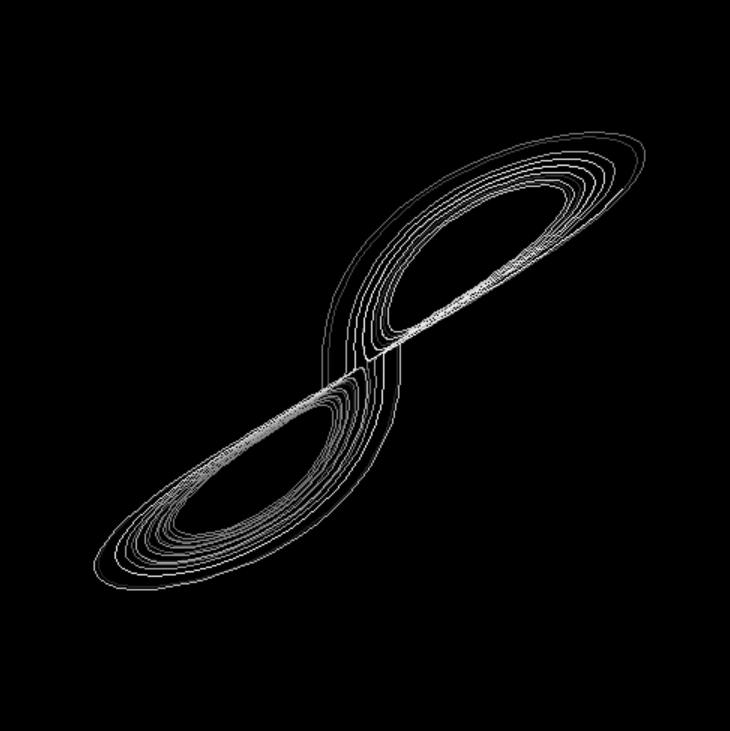
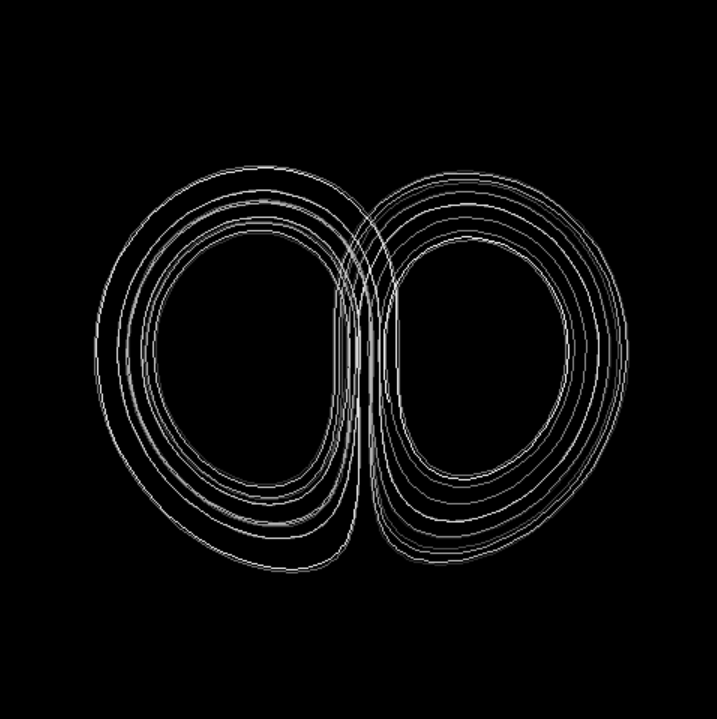
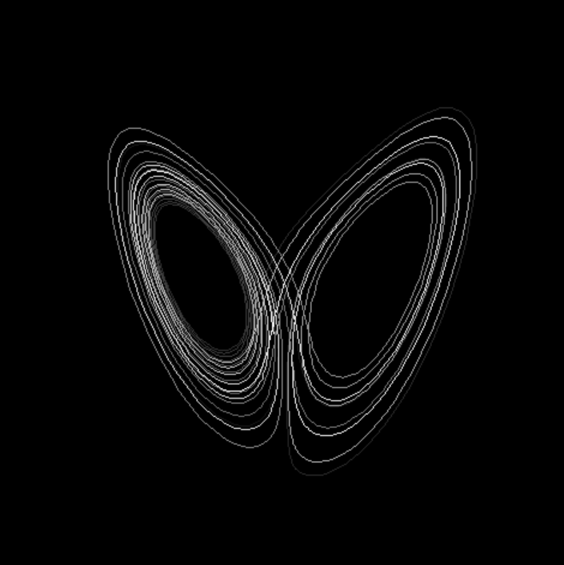

So this is a graphic to show a particle and its path traced out in pygame to show how it would flow in the lorentz attractor. I think it looks pretty neat. Since these equations require 3 dimentions, you can press the 1,2 and 3 keys on you keyboard to switch beteen views. These equations were originally created to model convection in the atmosphere and ended up as the poster child of chaos theory. For a read about this topic have a look here
Stuff to download
  